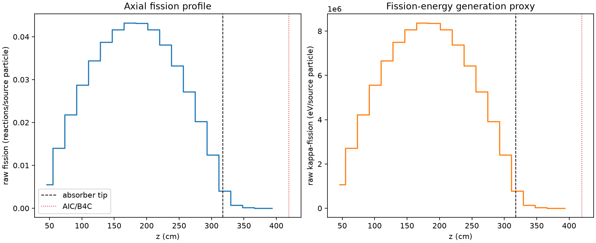
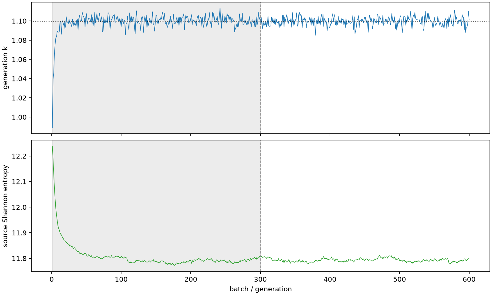

| field | value |
|---|---|
| experiment | V2-STAGE_128_OGRENCI_03-0020 |
| k | 1.099677735822159 |
| MC standard error | 0.00018011505617609172 |
| seconds | 1035.0498254409977 |
| acceptance | not_assessed |
| convergence | review_required |
Completed is output integrity only; physical and statistical review required. Zero tallies do not prove zero production or zero uncertainty.
| diagnostic | value |
|---|---|
| geometric fuel voxels | 5280 |
| zero fission tally voxels | 0 |
| low signal fuel voxels | 490 |
| low signal fission share | 8.121021424553634e-05 |
| low signal kappa share | 8.125031441783892e-05 |
| important fission share | 0.9500351531706704 |
| previous filter included | 4790 |
| duration estimate s | 1562.5173488400023 |
| actual minus estimate s | -527.4675233990047 |
| fission relative MC error | statistics |
|---|---|
| all_geometric_fuel | {"voxels": 5280, "positive_mean_voxels": 5280, "zero_mean_voxels": 0, "undefined_relative_error_voxels": 0, "median": 0.009728028056936656, "p95": 0.31679689782241804, "maximum": 0.7602786417928755} |
| low_signal | {"voxels": 490, "positive_mean_voxels": 490, "zero_mean_voxels": 0, "undefined_relative_error_voxels": 0, "median": 0.35414251512420253, "p95": 0.5828110123674962, "maximum": 0.7602786417928755} |
| important_95pct | {"voxels": 3441, "positive_mean_voxels": 3441, "zero_mean_voxels": 0, "undefined_relative_error_voxels": 0, "median": 0.008129114992635784, "p95": 0.01235067684310755, "maximum": 0.015516703664393882} |
| outside_previous_filter | {"voxels": 490, "positive_mean_voxels": 490, "zero_mean_voxels": 0, "undefined_relative_error_voxels": 0, "median": 0.35414251512420253, "p95": 0.5828110123674962, "maximum": 0.7602786417928755} |
| kappa_fission relative MC error | statistics |
|---|---|
| all_geometric_fuel | {"voxels": 5280, "positive_mean_voxels": 5280, "zero_mean_voxels": 0, "undefined_relative_error_voxels": 0, "median": 0.009717239302081886, "p95": 0.31639846456900617, "maximum": 0.7576603541781672} |
| low_signal | {"voxels": 490, "positive_mean_voxels": 490, "zero_mean_voxels": 0, "undefined_relative_error_voxels": 0, "median": 0.3534957822234042, "p95": 0.5823362536421338, "maximum": 0.7576603541781672} |
| important_95pct | {"voxels": 3441, "positive_mean_voxels": 3441, "zero_mean_voxels": 0, "undefined_relative_error_voxels": 0, "median": 0.008119084799319833, "p95": 0.01233696893365986, "maximum": 0.015497310817310503} |
| outside_previous_filter | {"voxels": 490, "positive_mean_voxels": 490, "zero_mean_voxels": 0, "undefined_relative_error_voxels": 0, "median": 0.3534957822234042, "p95": 0.5823362536421338, "maximum": 0.7576603541781672} |
| axial bin | fission share | kappa-fission share |
|---|---|---|
| 1 | 0.01231388757685919 | 0.012314377979323648 |
| 2 | 0.03121221942178565 | 0.031212231017756744 |
| 3 | 0.04866624490061314 | 0.04866620621575093 |
| 4 | 0.06398276212856324 | 0.0639823943908502 |
| 5 | 0.07663949103094464 | 0.07663925078042295 |
| 6 | 0.08624516064982675 | 0.08624485120930514 |
| 7 | 0.09274606449555185 | 0.09274585640469236 |
| 8 | 0.09622849094611162 | 0.09622814009338122 |
| 9 | 0.0961761082411627 | 0.09617598387936206 |
| 10 | 0.0927169902278437 | 0.09271655546938352 |
| 11 | 0.08492721896610475 | 0.0849270136119757 |
| 12 | 0.07394355847586451 | 0.07394325989951624 |
| 13 | 0.060530190063970035 | 0.060530001436088214 |
| 14 | 0.045032551404040756 | 0.04503234266696039 |
| 15 | 0.027708648626601825 | 0.027708602962086177 |
| 16 | 0.008901419808625202 | 0.008902972558350934 |
| 17 | 0.0015948505619178223 | 0.0015955848350232972 |
| 18 | 0.0003420366695645526 | 0.00034221995152730774 |
| 19 | 7.577471973713302e-05 | 7.581847397834202e-05 |
| 20 | 1.6331084310775273e-05 | 1.6336164264402323e-05 |
Histories include the inactive-to-active transition at batch 300. kappa-fission approximates fission energy production, not total heat deposition.

